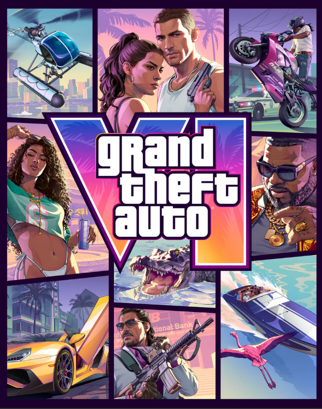
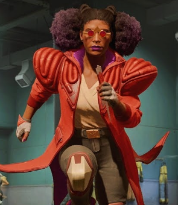
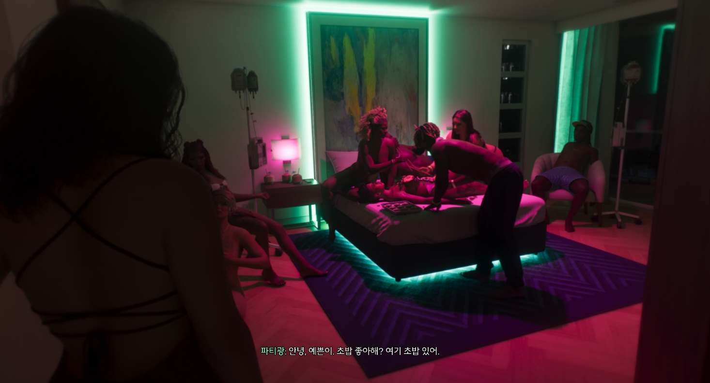

개붕이 들도 알다 싶이 최근 GTA6가 출시한후 많은 관심을 받고 있고
또 많은 욕도 듣고 있다 게임을 재밌게 한 사람 입장에서 비판이 아니라 근거 없는 선동이 너무 많아서 정리해봄
1. GTA6 는 지루하다
이건 취향에 따라 그렇다고 느낄수도 있다.
확실히 게임 자체가 GTA 보단 레드데드리뎀션2의 후속작 같은 느낌이 강하고
GTA5보단 무겁고 리얼리티 한 느낌이 강하다.
GTA5가 처음 출시 했을떄 GTA4와 비교해서 너무 가볍다고 욕먹었던걸 생각하면 아이러니한 부분
게임 방향성이 전작과 다르게 서사에 빌드업을 많이 쌓고 그 시간 자체가 길다보니 게임 출시 초 챕터1에서 그런 평가가 나오는것도 어찌보면 합당 할 수도 있다.
그렇다고 전작들보다 수위가 약하거나한건 아니다 게임을 하다보면 정신나가고 재밌는 파트가 충분히 많다.
(해본 사람은 무슨 장면인지 알꺼다)
2. GTA6 는 착한 남자친구 시뮬레이더 이다? + 퐁퐁 남이다?
사실 이걸 가장 해명하고 싶었다.
게임을 해본사람 입장에서 진짜 억울한 평가다.
GTA6의 남주인공 제이슨 듀발이 PC의 영향을 받아서 이런 캐릭터 성을 가진게 아니라 레드데드리뎀션2의 아서모건의 영향을 받은 것 같다.
그래서 전작들에 비해 진중한 면이 부각되는것 같고 그럼에도 게임을 하다보면 미친 범죄자 새끼고 충분히 또라이다
그럼에도 전작의 GTA5의 트래버 같은걸 원했다면 그건 인정...
그리고 챕터1에서 남자 주인공이 여친 수발을 들고나서 챕터2가 넘어가면
오히려 여주인공 루시아가 남자친구를 살리려고 발벗고 나서게 된다.
어떤 사람들은 이걸 페미 스토리라고 까던데
남자가 여친 수발드는건 퐁퐁남 인거고 여자가 남자 수발드는건 페미 스토리 인건가?
3. 루시아는 페미 캐릭터 이다.
이게 어떻게 페미 캐릭터임?

벌써 애를 잊었음?

요즘 페미는 여캐 위에 초밥 올려 먹음?
게임을 해본 사람을 알겠지만
루시아는 SNS의 허황됨에 빠져 함정에 빠지고 위기에 쳐하는 캐릭터다
절대로 페미언냐의 활약 서사가 아니다
4. GTA6는 바른생활을 강요한다
서사적으로 도덕적으로 옳다고 생각하는 행동들을 하면 엔딩에 영향이 있는 건 맞는 것 같다
그게 싫다고 하면 그건 충분히 불편할수 있다고 생각한다.
이것 또한 레드데드리뎀션2의 영향을 많이 받은것 같고 GTA5 팬들의 니즈를 빗겨 나간 것 같다.
그럼에도 플레이 자체에 제약이 있는건 아니다
게임 출시 초반에 뭐 흑인을 쏘면 안되고 시위대를 쏘는게 막혀 있고 이런건 전부 선동이다.
오히려 좀 더 리얼해진 시민과 경찰을 다채롭게 학살이 가능하다.
5. 30프레임 출시
이것도 아쉬운건 맞지만 억까라고 생각하는건
GTA5도 30프레임 출시 했다.
분명 ps5에 와선 많은 게임들이 60프레임에 가까운 프레임을 지원한건 사실이지만
게임을 직접 해보면 왜 30프레임 인지가 이해 되는 그래픽 퀄리티를 보여준다.
심지어 GTA5시절(ps3, xbox360) 에는 SSD도 보급이 안되었던 시절이라 오히려 GTA6보다 로딩이 길었다.
결론 밑 3줄 요약
1. 게임 자체는 재밌다.
2. 그럼에도 전작과 방향성이 달라 호불호는 이해한다
3. 그래도 절때 페미 스토리거나 PC가 묻은건 아니다 ㅅ1ㅂ
난 30시간쯤 되는데 99점 게임은 아니라봄 96정도 그리고 레데리2도했지만 그타만의 맛을 보려면 평범한 직장인 기준 일주일(평일2시간 주말 5시간플레이) 해야 도달할수있는게 ㅈ같을수있음 대신 서브 재밌고 맵이랑 상호작용 많아서 그전에도 재미보려면 좀 볼수있는데 메인에 너무 묶인 기술들이나 할수있는게 많음